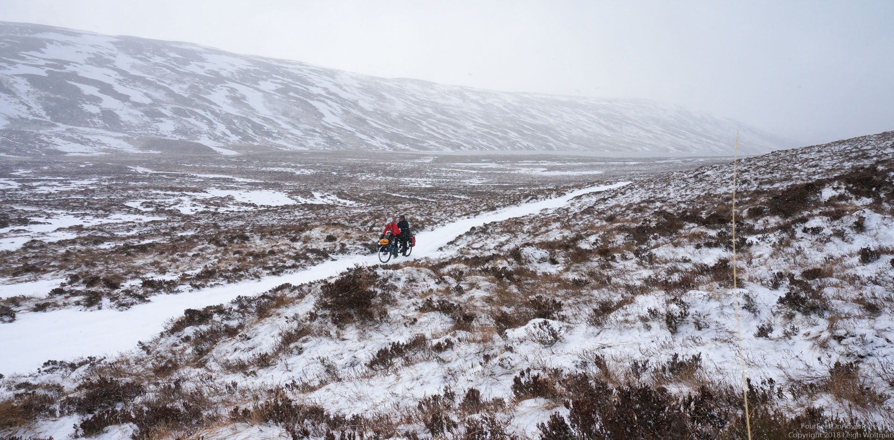

Knockdamph; our first bothy
Finally time to engage in another Scottish
Finally time to engage in another Scottish activity that we were really looking forward to, bothying! A bothy is a hut, according to our bothy book: “a rudimentary accommodation provided by landowners for bachelor farm labourers or estate workers who tended crops or livestock, but in recent times a shelter for anyone to stay the night or use as a lunch stop.” Most of the bothies are in wilderness locations, far away from anything. They don’t have heat or plumbing, just a stone wall with a roof. Some of them barely have a path going to them, but we decided to start with one where we could take our tandem bike to: Knockdamph.
This bothy was about 8 miles from a parking spot, taking a path along a small sheepfold, across a moore. And, in our description there was a little warning: note that the fording point of the Abhainn Poiblidh, just after the confluence of the burn with Rappach Water, may be inpassable.
A couple of days before take off we organized some new tires and replaced our road tires for some wide mountainbike tires, as the entire road was anticipated to be off-road. We took off early afternoon on Saturday. The road was good to begin with.

We realized that the higher we got into the hills, the more snow there was on the ground, and it didn’t take long before the north facing parts of the trail were snow patches where we got stuck and had to walk the bike through. It became quite the exercise.

When we got to the “possibly impassable” spot, we noticed it was a stream. It would be possible to get our bike through, but the water was freezingly cold. We were still about halfway, and it was getting dark soon (always an early dark in the Scottish winter). But oh well, we decided to give it a go anyways, in anticipation of the road being not too bad after the stream crossing. After some research on the best spot to cross, we decided on a spot a little upstream, where it looked like we could hop from stone to stone, while holding on to the bike for balance. Even at the time, it sounded like a plan bound to fail and end up in a wet and cold disaster, but we had waterproof bike bags with dry clothes, how disastrous could it get…
It took a little bit of yelling back and forth, and some balancing moves on the rim of what’s possible, but to our surprise (or should I say MY surprise) all of us made it to the other side, without unwanted bathing. We walked up the ramp away from the stream, and realized that we gained so much elevation that the entire road was covered in snow. After riding some bits, we gave in and just walked. It was only a couple more kms.
The bothy looked beautiful, a stone house in the middle of the snow-covered hills. A beauty.

We explored and settled in. Noted that it would probably be wort to bring in some firewood for heating the place next time, made our supper, and got in the sleeping bags for a peaceful rest.

It was a cloudless night, freezing cold.

We were good in our sleeping bags, but it was not easy to get out in the morning. The stream was half frozen. Before leaving we signed the bothy book. The previous entry was 2 months ago!

By the time we got going, we realized that this cold was amazing, it had frozen up the snow on the road, so that we could bike all the way back to the stream on top of the snow. Magical!

We decided to cross the stream on another spot and just walk through. I removed both shoes, Leigh one, to find out what is best. Definitely for crossing the shoe is best, but afterwards it is less cold for the feet to put them into somewhat dry shoes. Somehow Leigh even managed to bring the camera first to the other side to take a picture of us crossing, and thus having to cross twice. Not the warmest action in the world.

From the stream it was mainly downhill. Most of the snow held, but the lower we got the more we broke through, and the last snow patches we had to walk. As always strange after a trip like that to come back into a completely different world, but oh boy, did the hot chocolate taste good!!